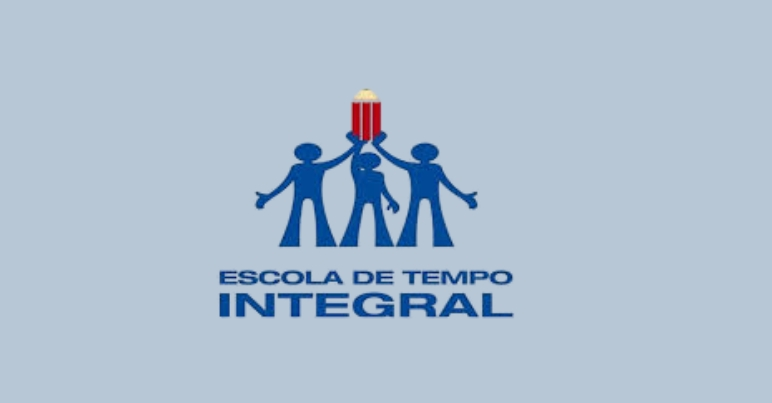
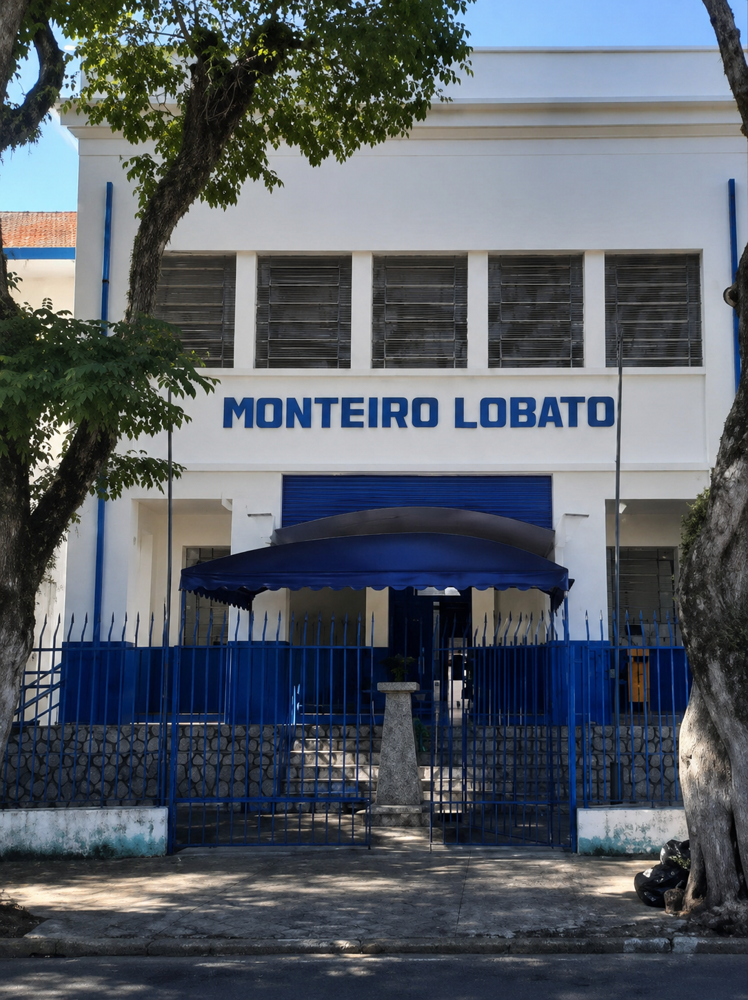
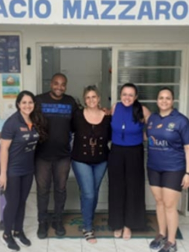

Com jornadas diárias de 7 ou 9 horas, o modelo de Ensino Integral propõe uma mudança significativa na organização escolar, priorizando a formação integral dos estudantes e colocando o Projeto de Vida como eixo central do processo educativo.
A iniciativa surge em um contexto de avanços no acesso à educação básica nas últimas décadas, mas ainda marcado por dificuldades na permanência e conclusão do Ensino Médio.
O PEI combina um Modelo Pedagógico com um Modelo de Gestão, estruturados para oferecer não apenas mais tempo na escola, mas também melhores condições de aprendizagem. A proposta inclui currículo flexível, disciplinas eletivas, orientação de estudos e práticas voltadas ao desenvolvimento socioemocional.
Baseado em princípios como Educação Interdimensional, Pedagogia da Presença, os quatro pilares da educação e o protagonismo juvenil, o programa busca formar jovens autônomos, solidários e preparados para os desafios do século XXI.

Diferenças entre os modelos de 7 e 9 horas
Dentro do programa, coexistem dois formatos principais: o PEI de 7 horas e o de 9 horas. Embora ambos compartilhem a mesma base pedagógica, apresentam diferenças importantes na organização do tempo, na rotina escolar e nas oportunidades oferecidas aos estudantes.
No modelo de nove horas, as atividades escolares ocorrem em turno único, estendendo-se habitualmente das 7h até as 16h ou 16h30. Vale notar que, desde 2025, algumas unidades passaram a adotar o intervalo das 8h às 17h. Em Taubaté, as escolas estaduais Newton Câmara e Monteiro Lobato destacam-se não apenas por seguirem essa jornada, mas por figurarem entre as pioneiras na implementação do modelo no Vale do Paraíba Nesse formato, alunos e professores permanecem o dia inteiro na unidade, o que permite uma rotina mais integrada e contínua. A carga horária ampliada favorece o desenvolvimento de atividades diversificadas, com maior foco no Projeto de Vida, estudos orientados e práticas interdisciplinares. Além disso, esse modelo costuma oferecer um número maior de aulas semanais e intervalos mais estruturados, incluindo tempo ampliado para almoço e momentos específicos para tutoria.
narrativas mais próximas da realidade do país. Dessa forma, Mazzaropi não apenas marcou sua época, mas também ajudou a construir e fortalecer a identidade do cinema brasileiro.
Já o modelo de 7 horas funciona em dois turnos distintos — manhã e tarde/noite —, com horários como 7h às 14h ou 14h15 às 21h15. Esse é o caso da escola Amácio Mazzaropi, também em Taubaté. Essa organização atende, especialmente, estudantes que precisam conciliar os estudos com o trabalho. Embora tenha uma carga horária menor em comparação ao modelo de 9 horas, ainda supera a das escolas regulares e mantém os princípios do Ensino Integral. No entanto, a divisão em turnos impacta a dinâmica escolar, exigindo adaptações na organização pedagógica.
Um exemplo disso está nas reuniões de planejamento e alinhamento pedagógico (ATPC). Enquanto nas escolas de 9 horas essas reuniões ocorrem de forma unificada, envolvendo toda a equipe, no modelo de 7 horas elas geralmente são realizadas em grupos separados, de acordo com os turnos.
Tendência de expansão do modelo de 9 horas
A Secretaria da Educação do Estado de São Paulo tem incentivado a migração das escolas de 7 para o modelo de 9 horas, com o objetivo de consolidar uma jornada mais extensa e potencializar os resultados educacionais. A proposta é ampliar o tempo de permanência dos estudantes na escola e fortalecer ações voltadas à aprendizagem e ao desenvolvimento integral.
Essa mudança também busca padronizar o funcionamento das unidades e ampliar as oportunidades pedagógicas, ainda que levante desafios, especialmente para estudantes que dependem da flexibilidade do modelo de 7 horas.
Formação integral como prioridade
Independentemente do formato, o PEI mantém como principal objetivo a formação integral dos estudantes. A proposta vai além do ensino tradicional, oferecendo espaços para que os jovens desenvolvam suas habilidades, construam seus projetos de vida e se preparem para o mundo do trabalho e para a vida em sociedade.
Com a ampliação da jornada e a diversificação das práticas pedagógicas, o programa reforça o papel da escola como um ambiente de transformação, no qual o estudante deixa de ser apenas receptor de conteúdo e passa a atuar como protagonista de sua própria trajetória.


O diferencial da PEI de 7 horas
A implementação do modelo de sete horas no Programa de Ensino Integral (PEI) em São Paulo tem se consolidado como uma alternativa estratégica para estudantes que buscam conciliar a formação acadêmica com a inserção no mercado de trabalho. Embora ofereça as mesmas diretrizes pedagógicas do modelo de nove horas, essa modalidade exige uma engenharia de horários mais rigorosa: com intervalos reduzidos e a integração de atividades como os Clubes Juvenis e a Tutoria em períodos adaptados, a grade curricular sofre supressões em disciplinas como Artes e Orientação de Estudos. Apesar do ritmo acelerado, especialistas e gestores apontam que o formato cumpre o papel de democratizar o acesso ao ensino integral, preservando as premissas de protagonismo e projeto de vida mesmo diante das limitações temporais.